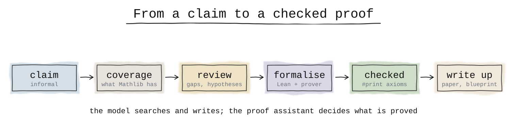
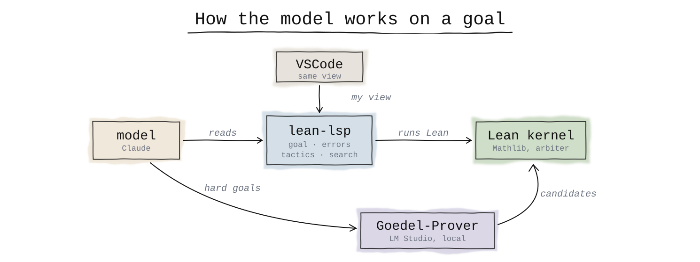
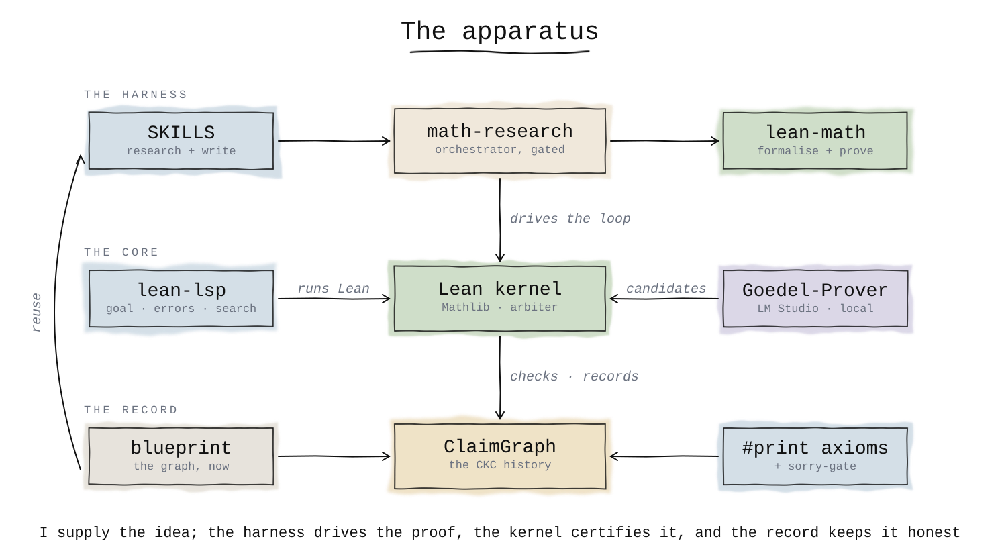

My training is primarily in mathematics, and a research question, for me, tends to move back and forth between numerics and proof. I usually start by convincing myself a property is true on a handful of numerical examples. If it survives that, I try to prove it formally, under the smallest set of hypotheses I can manage. Then I go back to numerics, this time not to test the property again but to validate a prediction the theory now makes. The two numerical steps are mostly code, which current models write well given a decent agent harness, so that part of the workflow is easy to build. A real proof is expensive, and the informal argument I write to convince myself is itself a common source of error. It is also the step an agent helps with least, since a proof does not come to it the way code does. This post is about what I put in place: the tooling that turns an argument I find convincing into one a machine will certify, and the discipline that keeps me honest about what the certificate guarantees.
Where machine proving is now¶
This is one place large language models have quietly become useful, as long as you do not ask them to be the final authority. Over the last two years the most convincing results in machine mathematics have been the ones coupled to a proof assistant. DeepMind’s AlphaProof reached silver-medal standard on the 2024 International Mathematical Olympiad working entirely in Lean, so its solutions are machine-checkable rather than merely persuasive (DeepMind; Nature, 2025). In 2025 both Gemini Deep Think and OpenAI reported gold-medal performance at the IMO, but largely as natural-language proofs graded by humans. The line that interests me is the formal one, where correctness is decided by a kernel and not by a referee: AlphaProof, Harmonic’s Aristotle, and open models such as DeepSeek-Prover-V2, Goedel-Prover-V2 and Kimina-Prover, which now clear most of the standard Lean benchmarks. In each case the model does the searching and the writing, and the proof assistant is what decides whether the output counts as a proof.
A primer on proof assistants¶
A proof assistant checks mathematics the way a compiler checks a program. You write your definitions and theorems in a formal language, you write the proof as an explicit sequence of steps, and the system tells you whether those steps actually establish the claim. Nothing is taken on trust. An argument that reads well but quietly skips a case does not compile.
The checking is done by a small part of the system called the kernel. The kernel knows only the primitive rules of the logic, a short and fixed list, and every proof eventually reduces to a chain of those rules that it verifies one at a time. Everything else, the editor, the automation, the search, exists to help you build that chain, and none of it is trusted: if any of it is wrong, the kernel rejects the proof rather than letting a false one through. That is why “checked by the kernel” means something: the result rests on a few thousand lines of code that rarely change and that many people have read, and on nothing else.
You do not write those primitive steps yourself. You write tactics, instructions like “do induction on n” or “this is just linear arithmetic”, and the system expands them into the low-level proof the kernel reads. Lean is the system I use, and Mathlib is the library that comes with it: a large, shared body of formalised mathematics, from elementary number theory and linear algebra up through measure theory and topology, maintained by hundreds of people. lake, Lean’s build tool, compiles a project and pulls Mathlib in as a dependency rather than a copy. Proving something new is mostly a matter of stating it in Lean and connecting it to what Mathlib already has, until the kernel is satisfied.
The setup¶
The pieces fit into a single path: from an informal claim, through what Mathlib already covers and a review of the argument, into the formalisation loop, and out as a checked result and a write-up. Figure 1 is the shape of it.

The formal substrate is Lean 4 and Mathlib. Mathlib is pulled in as a prebuilt cache rather than
compiled from source (lake exe cache get), so the edit-and-check loop runs in seconds rather than
hours. I work in VSCode with the official
Lean 4 extension, which gives
the interactive goal view: an InfoView
that shows the proof state at the cursor, the remaining goals, and the errors inline as you type. That
feedback is what makes Lean workable for a person, and the point of the pipeline is to give the model
the same feedback rather than letting it edit blind and recompile.
It gets that through the Lean language server. A small MCP server
(lean-lsp) exposes the LSP to the model as tools, so it
can interrogate a proof the way I do in the editor instead of guessing:
lean_goalreturns the goal state and remaining hypotheses at a position, so the model knows exactly what is left to prove;lean_diagnostic_messagesreturns the compiler errors at a line, so it reads the actual failure instead of inferring why a tactic did not work;lean_hover_infogives a type signature or docstring without opening the source;- and
lean_multi_attempttries candidate tactics at a position without committing an edit, so the model can throwsimp,ring,omegaorexact?at a goal and see which one closes it before writing anything down.

The other half is search. A language model gets a Lean proof wrong in all the ordinary ways a person
does: the logic does not go through, an edge case is left uncovered, a lemma is applied outside the
hypotheses it actually needs. The difference from an informal proof is that the kernel catches all of
them, so a mistake costs time, not correctness. One failure mode is worth designing
against directly, though: left to itself the model will confidently reach for a lemma that does not
exist and then waste attempts trying to make it work. Rather than let it guess at names, every lookup
is grounded in the real library: natural-language search (leansearch,
leanfinder), type-pattern
search (loogle), a fast local declaration search, and goal-directed
premise search (state_search, hammer_premise) that proposes lemmas likely to discharge the current
goal. These run locally, so the search is offline and not rate-limited. Around this sit the skills
proper, packaged as a small Claude Code
plugin: a
statement-first formalisation loop, a Mathlib coverage check that scopes what already exists before I
start, an adversarial review of the informal argument before any Lean is written, and an orchestrator
that sequences the whole workflow, from the literature search and the informal argument through to the
formal proof and the write-up, stopping at the points where a human should decide something.
The loop the model runs is compile-first: it writes a whole candidate proof and reads what Lean reports, rather than stepping one tactic at a time, and when a proof fails it sorts the error before repairing it, a false statement back to the drawing board, a missing lemma to search, an unsolved goal into smaller pieces.
The prover is the one component worth naming separately. Most subgoals are closed by ordinary tactics and existing Mathlib lemmas; a self-contained one that stalls, an inequality or an algebraic identity or a finite check, is escalated automatically to Goedel-Prover-V2, an open model specialised for Lean. I run it locally: LM Studio serves it behind an OpenAI-compatible endpoint on localhost, the harness samples a handful of candidate proofs, and Lean verifies or rejects each one.
The honesty is mechanical, not a matter of trusting the model or myself. Lean lets you write sorry
as a placeholder for a proof you have not done, and a file with a sorry in it still compiles, so a
model that gets stuck can hand you something green that establishes nothing. A hook runs on every edit
to a Lean file and flags any sorry, admit, sorryAx, native_decide or freshly introduced
axiom, treating it as blocking, so a hole cannot slip through quietly. And every result is passed
through #print axioms, which reports what it actually rests on: only Lean’s standard axioms
(propext, Classical.choice, Quot.sound), in which case it is machine-checked; sorryAx, in
which case a hole remains and it is not proved; or a named axiom I introduced, in which case it is
proved assuming that one stated fact.

#print axioms and sorry-gate honesty checks, and the CKC ClaimGraph). The record feeds the next proof: checked lemmas are reused, and the open frontier is ranked by how much rests on it.Treating mathematics as software: a repository per paper¶
I have started keeping a separate repository for each paper, with the LaTeX manuscript and the Lean formalisation side by side. The proof travels with the paper rather than living in a notebook I will lose, the statements in the text map to named declarations the kernel has checked, and anyone can rebuild both from source. It also enforces a discipline I find useful: a claim in the paper either corresponds to a checked Lean result or it is something I only verified numerically, and the repository makes the difference visible instead of letting it blur. The same source produces a Lean blueprint, a document that states each result in English next to the Lean declaration that backs it, carrying its verification status and its axiom dependencies. A last step closes the loop: once Lean has checked a result, the model translates the validated proof back into a natural-language argument for the manuscript, so the written proof is a readback of the formal one. I still edit it for readability, but it follows the proof Lean accepted rather than my memory of it. The labels are the part I keep strict: a result is marked proved only when the kernel agrees, and assumed otherwise.
Recording status in the commits¶
On every software project I use git, and on top of it I enforce
Conventional Commits, for everything that discipline buys. The
norm is small: a commit’s type records what kind of change it is, feat, fix, and the rest, which
is enough to derive a semantic version and an automated changelog from the history alone. I have come
to rely on it for many years. Enforcing it with a pre-commit hook helps more
than I expected once coding agents are in the loop: a clean, typed history gives them a fast way to understand a codebase, and the rule that
each commit be one well-typed change pushes them toward smaller, higher-quality sets of edits rather
than one sprawling commit that does five things at once. For the numerical side of my work this is
most of what I need: it is mostly code, the models are good at code, and the convention keeps its
history clean.
Theorem proving is where this stops being enough. Conventional Commits was built for software, and its verbs describe features and bugfixes; they have nothing to say about whether a result is conjectured, proved, machine-checked, or proved only under a cited axiom, which is the status I most care about in a research repository.
So I wrote an extension for scientific work, Conventional Knowledge
Commits, with mathematical proofs as one case among
others. It keeps two things apart in a commit: what the change does to whatever depends on it, and how
established the claim now is. The second lives in a footer that later commits update as a sorry is
closed or an axiom is discharged, so the history records how a result’s standing evolved and not only
where it ended up. And it is checked rather than asserted: a commit that claims a result is
machine-checked is cross-checked against #print axioms and rejected if they disagree. It closes the
last place the honesty could leak, which is a person writing “done” over a gap.

This is worth setting against the Lean blueprint, since the two overlap and I use both. The blueprint is the better view of the dependency graph as it stands: it lists every result, what each one uses, whether it is formalised and what it assumes, and it renders as a graph you can navigate. What it describes is the present state, and that state moves only one way, from unproved toward proved. It keeps no record of how a result arrived there, and no way to express one moving backward, a conjecture that turns out false or a cited axiom that is later broken. That is the part CKC adds: the history lives in the commits rather than a regenerated document, each status is checked at the moment the claim is made instead of redrawn afterward, and the events that are not monotone, a refutation or a discharge, have somewhere to be recorded. The blueprint answers where the proof stands now; the commit log answers how it got there and what it rested on along the way. Neither replaces the other, so the repository keeps both.
This non-monotone history is not special to formal repositories. The same pattern, a claim believed settled and then overturned much later, runs through the history of mathematics. Two cases below, each laid out as a status log you can replay: watch where the red reaches, and where it stops.
IGL: a real paper, formalised after the fact¶
This is the whole flow, applied to a paper that already existed. The first I put through it was Intrinsic Green’s
Learning, which I presented at the
AI & PDE workshop at ICLR 2026. The mathematics in it is not hard,
which is partly why I chose it: the point was to run the pipeline end to end on a real paper, not to
clear a difficult proof. I formalised the core, the factorisation theorem, the separability barrier
with a witness for its necessity, and the KAN and additive-Green corollaries: eighteen results
machine-checked against Lean’s standard axioms, with no sorry, in about 450 lines over eight files.
One supporting fact I did not prove. The
Braess-Hackbusch exponential-sum
bound, which keeps the separable rank small, is classical and simply not in Mathlib, and reproving it
is a paper’s worth of analysis beside the point. I recorded it as a named axiom rather than leave a
sorry or pretend I had done it. The eighteen checked results do not rest on it, and #print axioms
names it on anything that would.
The repository is the one I described earlier: the LaTeX manuscript beside the Lean, every claim either checked by the kernel or marked as assumed, and a commit history that records how each result reached the standing it has now.
#print axioms reports: green for machine-checked against the standard axioms, amber for the one cited axiom. Hover a node to trace what it rests on and what rests on it. The Commit history tab shows the same results as their CKC log, where each one moves from conjecture through axiomatised to machine-checked, and one conjecture is refuted along the way.This is also where the bookkeeping earns its keep. Suppose someone later finds a flaw in the
exponential-sum bound, or in the way I stated it. In an informal paper that is a quiet problem: the
cited result is buried in the prose, tracking down everything that leaned on it is a manual audit, and
the published version goes on asserting the old conclusion. Here it is mechanical. #print axioms
reports, for every theorem, the axioms it actually rests on, so the set of results affected by
retracting expSumRank_logBound is something I can compute rather than reconstruct from memory. In
this formalisation that set is empty, because the eighteen checked results never used the axiom, and
the value is knowing it is empty rather than hoping so. When a result does sit on a shaky assumption,
the same mechanism names it. In the commit graph the retraction is then a single
refute(exp-sum)!: the ! marks it breaking, the claim’s status flips from axiomatised to refuted,
and every result whose proof named it stops counting as proved and is flagged as resting on a refuted
assumption, not declared false, with none left quietly green. The history already holds one of these. The naive-separable conjecture was recorded, then
disproved by a rank-1 counterexample, and the graph keeps both the claim and its refutation rather
than erasing the dead end.
And it leaves something to build on. To extend IGL I import its Lean and use the checked declarations as lemmas in the new proofs, with the blueprint growing to map them onto what is already there, rather than starting again from the paper.
What changed, and what didn’t¶
What changed is the bookkeeping, not the mathematics. The boundary between what I have proved, what I am assuming, and what is still open no longer lives in my head: the kernel decides which results are proved, a named axiom marks each thing I take on trust, and the commit history records it whenever any of that moves.
That boundary erodes on its own. A wrong proof of the four-colour theorem was accepted for eleven years, and the Mertens conjecture was believed for nearly a century. I am not working at that scale, but it is the same failure in miniature, and I would rather the standing of my own results not depend on my memory to stay honest.
And I expect the balance to keep shifting toward the model. It already knows far more mathematics than I ever will, across branches I have never worked in, and its real strength is cross-pollination: carrying a result from one part of the subject into another where I would not have thought to look. I provide an idea and a direction, and it provides knowledge I do not have. The workflow is the harness around that, and CKC is its bookkeeping, the same role Conventional Commits plays for software. As models get better at building proofs and not only checking them, the harness and its bookkeeping are what I have ready for that.